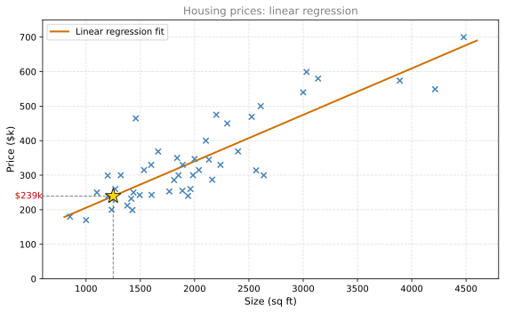
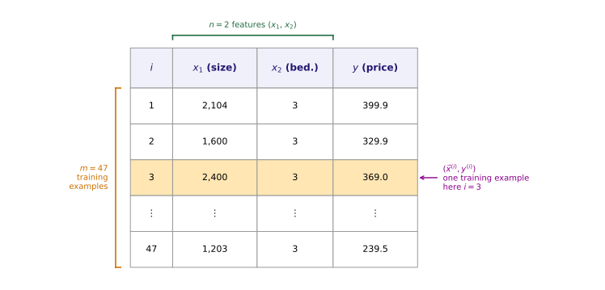
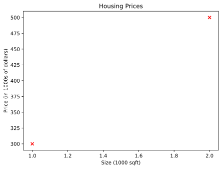
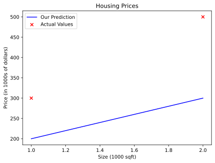
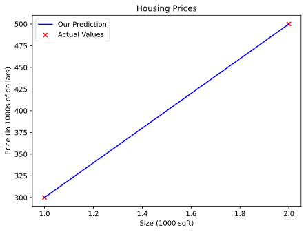

Linear Regression
machine-learning
supervised-learning
regression
Linear regression means fitting a straight line to your data. It is probably the most widely used learning algorithm in the world today. As you get…
Introduction to Linear Regression
Linear regression means fitting a straight line to your data. It is probably the most widely used learning algorithm in the world today. As you get familiar with linear regression, many of the concepts you learn here will also apply to other machine learning models later in this specialization.
Housing Price Prediction
Say you want to predict the price of a house based on its size. We will use a dataset on house sizes and prices from Portland, Oregon. The horizontal axis is the size of the house in square feet, and the vertical axis is the price in thousands of dollars.
Each data point (cross) represents a house with its size and the price it sold for. Suppose you are a real estate agent helping a client sell her 1,250 square foot house. By building a linear regression model, the algorithm fits a straight line to the data. Reading off the line at 1,250 square feet gives a predicted price of roughly $239,000.
This is supervised learning because the training data includes the “right answers” (the actual prices for each house). It is a regression model because it predicts a number (the price) from infinitely many possible values. If you have taken the statistics course, you may recognize linear regression from a maximum likelihood perspective. Here we approach it from an optimization angle instead.
Review Questions
1. Why is this problem a “regression” problem rather than a “classification” problem?
TipAnswer
Because the model predicts a number (house price) that can take infinitely many possible values, rather than a category from a small finite set.
1. What makes this “supervised” learning?
TipAnswer
The training data includes the correct output (the actual sale price) for each input (house size). The algorithm learns from these right answers.
1. For linear regression, the model is \(f_{w,b}(x) = wx + b\). Which of the following are the inputs (features) that are fed into the model and with which the model is expected to make a prediction?
- \((x, y)\)
- \(x\)
- \(w\) and \(b\)
- \(m\)
TipAnswer
b. \(x\) is the input feature (for example, the size of the house). The model takes \(x\) as input and produces a prediction \(\hat{y}\). The parameters \(w\) and \(b\) are not inputs, they are internal values that the model learns. \(m\) is just the count of training examples, and \((x, y)\) is a training pair used during learning, not what you feed the model at prediction time.
Training Set and Notation
The dataset used to train the model is called a training set. Here is the shape of our training set, with the first three rows and the last row shown.
| \(i\) | Size (\(x_1\), sq ft) | Bedrooms (\(x_2\)) | Price (\(y\), $k) |
|---|---|---|---|
| 1 | 2,104 | 3 | 399.9 |
| 2 | 1,600 | 3 | 329.9 |
| 3 | 2,400 | 3 | 369.0 |
| \(\vdots\) | \(\vdots\) | \(\vdots\) | \(\vdots\) |
| 47 | 1,203 | 3 | 239.5 |
The training set has 47 rows, each representing one house, and 2 columns of input data: size and bedrooms. You can download the full dataset here.
The diagram below labels every piece of notation directly on the table. Row 3 is highlighted as a concrete example of a single training example.

The standard notation used in machine learning is summarized below.
| Symbol | Meaning | Example |
|---|---|---|
| \(x\) | Input variable (feature) | Size of house |
| \(y\) | Output variable (target) | Price of house |
| \(m\) | Number of training examples | 47 |
| \(n\) | Number of features in the dataset | 2 (size, bedrooms) |
| \((x, y)\) | A single training example | (2104, 399.9) |
| \((x^{(i)}, y^{(i)})\) | The \(i\)-th training example | \((x^{(3)}, y^{(3)}) = (2400, 369.0)\) |
| \(x_j\) | The \(j\)-th feature | \(x_1\) = size, \(x_2\) = bedrooms |
Note
The superscript \((i)\) in parentheses is not exponentiation. \(x^{(2)}\) does not mean “\(x\) squared.” It means the input value from the second training example (the second row in the table).
The full dataset has \(n = 2\) features, size and bedrooms, so \(j\) runs from 1 to 2. The model built later on this page, \(f_{w,b}(x) = wx + b\), deliberately uses only \(x_1\) (size) as its single input and sets \(x_2\) (bedrooms) aside. That choice is exactly what makes it univariate linear regression. Wherever this page writes plain \(x\) or \(x^{(i)}\) from here on, it means \(x_1\), the size column. The Multiple Linear Regression page brings \(x_2\) back in and uses both features together.
So for example:
- \(x_1^{(1)} = 2104\), \(x_2^{(1)} = 3\), \(y^{(1)} = 399.9\) (first house in the dataset)
- \(x_1^{(2)} = 1600\), \(x_2^{(2)} = 3\), \(y^{(2)} = 329.9\) (second house)
- \(m = 47\) (total number of training examples), \(n = 2\) (total number of features)
Note that the client’s house is not in the training set because it has not yet been sold, so no one knows its price. To predict the price, you first train the model on the training set, and then the model can predict the client’s house price.
Review Questions
1. In the notation \((x^{(3)}, y^{(3)})\), what does the superscript (3) refer to? What are the values of \(x^{(3)}\) and \(y^{(3)}\) in our dataset?
TipAnswer
It refers to the third training example (the third row in the training set table). It is not exponentiation. From our dataset: \(x^{(3)} = 2400\) (size in sq ft) and \(y^{(3)} = 369.0\) (price in $k). On this page, \(x^{(3)}\) means \(x_1^{(3)}\), the size column, since the model here only uses size.
1. If a training set has 100 houses, what is \(m\)?
TipAnswer
\(m = 100\). The variable \(m\) denotes the total number of training examples.
1. In our housing dataset, \(x\) represents the size of the house and \(y\) represents the price. Why is \(y\) called the “target” variable?
TipAnswer
Because \(y\) is the value we are trying to predict (the output). It is the “target” that the learning algorithm aims to get close to when making predictions.
1. The housing dataset has \(n = 2\) features. What are they, and does the univariate model on this page use both?
TipAnswer
The two features are size (\(x_1\)) and bedrooms (\(x_2\)). The univariate model on this page uses only \(x_1\) (size). Using both features together is covered on the Multiple Linear Regression page.
How Supervised Learning Works
Here is the overall process:
- You feed the training set (input features \(x\) and output targets \(y\)) to a learning algorithm.
- The algorithm produces a function \(f\) (the model).
- Given a new input \(x\), the model outputs a prediction \(\hat{y}\) (read as “y-hat”).
The notation is:
- \(f\) is the model (historically called “hypothesis”)
- \(x\) is the input (feature)
- \(\hat{y}\) is the prediction (the model’s estimate of \(y\))
- \(y\) is the target (the actual true value from the training set)
The key distinction: \(y\) is the actual value, \(\hat{y}\) is the model’s estimate. They may or may not be equal. For your client’s house, the true price \(y\) is unknown until the house sells. The model produces \(\hat{y}\), which is its best prediction.
Review Questions
1. What is the difference between \(y\) and \(\hat{y}\)?
TipAnswer
\(y\) is the actual true value (the target from the training set). \(\hat{y}\) is the model’s prediction or estimate of \(y\). They may or may not be equal.
1. In the supervised learning process, what does the learning algorithm produce?
TipAnswer
It produces a function \(f\) (the model) that can take a new input \(x\) and output a prediction \(\hat{y}\).
Model Representation
The key question is: how do we represent the function \(f\)? What math formula do we use?
For linear regression, \(f\) is a straight line:
\[ f_{w,b}(x) = wx + b \]
Here \(w\) and \(b\) are numbers called parameters (also called coefficients or weights). The values chosen for \(w\) and \(b\) determine the prediction \(\hat{y}\) for any given input \(x\).
- \(w\) controls the slope of the line (how steep it is)
- \(b\) controls the y-intercept (where the line crosses the vertical axis)
As a shorthand, we sometimes write \(f(x)\) instead of \(f_{w,b}(x)\). Both mean the same thing.
You might ask: why use a linear function (straight line) instead of something more complex like a curve? A straight line is simple and easy to work with. It serves as a foundation for understanding key concepts like cost functions and gradient descent, which will later be applied to more complex non-linear models.
Univariate Linear Regression
This model is called linear regression with one variable, meaning there is a single input feature \(x\) (the size of the house). Another name for this is univariate linear regression (“uni” means one, “variate” means variable).
Later, you will see multivariate linear regression, where predictions are based on multiple features (for example, size, number of bedrooms, age of the house, and more).
Review Questions
1. In the model \(f_{w,b}(x) = wx + b\), what do \(w\) and \(b\) represent?
TipAnswer
\(w\) and \(b\) are the model’s parameters. \(w\) is the slope of the line (how much the prediction changes per unit increase in \(x\)), and \(b\) is the y-intercept (the prediction when \(x = 0\)).
1. What does “univariate” mean in “univariate linear regression”?
TipAnswer
“Univariate” means one variable. It indicates that the model uses a single input feature \(x\) to make predictions. “Uni” means one (Latin), “variate” means variable.
1. Why start with a linear model instead of a more complex curve?
TipAnswer
A linear model is simple and easy to work with. It provides a foundation for understanding key concepts (like cost functions and gradient descent) that will later be applied to more complex non-linear models.
Lab: Implementing Linear Regression in Python
In this lab, you will implement the linear regression model \(f_{w,b}(x) = wx + b\) in Python. You will use a simple dataset with just two data points to build intuition, then make a prediction for a new house.
Setup
We use two Python libraries:
- NumPy for numerical computation (arrays, math operations)
- Matplotlib for plotting data
import numpy as np
import matplotlib.pyplot as pltNumPy lets us store data in arrays, which are like lists of numbers that support fast math operations. Matplotlib lets us create charts and graphs.
Creating Training Data
Our training set is intentionally tiny (just two houses) so we can see exactly how the model works:
| Size (1000 sqft) | Price ($1000s) |
|---|---|
| 1.0 | 300 |
| 2.0 | 500 |
We store the inputs (sizes) in x_train and the outputs (prices) in y_train as NumPy arrays:
# x_train is the input variable (size in 1000 square feet)
# y_train is the target (price in 1000s of dollars)
x_train = np.array([1.0, 2.0])
y_train = np.array([300.0, 500.0])
print(f"x_train = {x_train}")
print(f"y_train = {y_train}")x_train = [1. 2.]
y_train = [300. 500.]The np.array(...) function creates a NumPy array from a list of numbers. The f"..." syntax is a Python f-string, which lets you embed variables directly inside a string using curly braces {}.
Number of Training Examples
The variable m represents the number of training examples. You can get it from the array’s .shape attribute (which tells you the dimensions of the array) or simply with Python’s len() function:
# Method 1: using .shape
m = x_train.shape[0]
print(f"Number of training examples (shape): {m}")
# Method 2: using len()
m = len(x_train)
print(f"Number of training examples (len): {m}")Number of training examples (shape): 2
Number of training examples (len): 2Accessing Individual Training Examples
To get the \(i\)-th training example, you index into the array. Note that Python uses zero-based indexing, meaning the first element is at position 0:
# Access the first training example (index 0)
i = 0
x_i = x_train[i]
y_i = y_train[i]
print(f"(x^({i}), y^({i})) = ({x_i}, {y_i})")
# Access the second training example (index 1)
i = 1
x_i = x_train[i]
y_i = y_train[i]
print(f"(x^({i}), y^({i})) = ({x_i}, {y_i})")(x^(0), y^(0)) = (1.0, 300.0)
(x^(1), y^(1)) = (2.0, 500.0)Plotting the Data
You can visualize the training data using plt.scatter(). The marker='x' argument draws crosses, and c='r' makes them red:
%config InlineBackend.figure_formats = ['svg']
plt.scatter(x_train, y_train, marker='x', c='r')
plt.title("Housing Prices")
plt.ylabel('Price (in 1000s of dollars)')
plt.xlabel('Size (1000 sqft)')
plt.show()
Computing the Model Output
The linear regression model computes \(f_{w,b}(x) = wx + b\) for every training example. Here is a function that does this using a for loop:
def compute_model_output(x, w, b):
"""
Computes the prediction of a linear model.
Args:
x (ndarray): input data (m examples)
w (scalar): model parameter (weight/slope)
b (scalar): model parameter (bias/intercept)
Returns:
f_wb (ndarray): model predictions for each input
"""
m = x.shape[0] # number of examples
f_wb = np.zeros(m) # create array of zeros to store predictions
for i in range(m): # loop through each example
f_wb[i] = w * x[i] + b
return f_wbLet us break this down:
np.zeros(m)creates an array ofmzeros, which we will fill in with predictions- The
forloop goes through each training example and computes the prediction \(wx^{(i)} + b\) - The function returns all predictions as an array
Experimenting with Parameters
Let us try \(w = 100\) and \(b = 100\) and see how the model fits:
%config InlineBackend.figure_formats = ['svg']
w = 100
b = 100
tmp_f_wb = compute_model_output(x_train, w, b)
plt.plot(x_train, tmp_f_wb, c='b', label='Our Prediction')
plt.scatter(x_train, y_train, marker='x', c='r', label='Actual Values')
plt.title("Housing Prices")
plt.ylabel('Price (in 1000s of dollars)')
plt.xlabel('Size (1000 sqft)')
plt.legend()
plt.show()
The blue line (our model) does not pass through the red crosses (the actual data). That means \(w = 100\), \(b = 100\) is not a good fit.
Now try \(w = 200\) and \(b = 100\):
%config InlineBackend.figure_formats = ['svg']
w = 200
b = 100
tmp_f_wb = compute_model_output(x_train, w, b)
plt.plot(x_train, tmp_f_wb, c='b', label='Our Prediction')
plt.scatter(x_train, y_train, marker='x', c='r', label='Actual Values')
plt.title("Housing Prices")
plt.ylabel('Price (in 1000s of dollars)')
plt.xlabel('Size (1000 sqft)')
plt.legend()
plt.show()
The line now passes exactly through both data points. That means \(w = 200\) and \(b = 100\) is a perfect fit for this dataset.
Making a Prediction
With the correct parameters (\(w = 200\), \(b = 100\)), we can predict the price of a new house. For a 1,200 sqft house (which is \(x = 1.2\) in our units of 1000 sqft):
w = 200
b = 100
x_i = 1.2 # 1200 sqft in units of 1000 sqft
cost_1200sqft = w * x_i + b
print(f"Predicted price for 1200 sqft house: ${cost_1200sqft:.0f} thousand dollars")Predicted price for 1200 sqft house: $340 thousand dollarsSummary
In this lab you learned:
- Linear regression builds a model that establishes a relationship between features and targets
- For simple linear regression, the model has two parameters \(w\) and \(b\)
- Different values of \(w\) and \(b\) produce different lines (different predictions)
- Once you find good parameter values, you can use the model to predict prices for new houses
Review Questions
1. In the function compute_model_output, what does np.zeros(m) do and why do we need it?
TipAnswer
np.zeros(m) creates a NumPy array filled with m zeros. We need it to have a place to store the predictions. As the for loop runs, each zero gets replaced with the actual computed value \(wx^{(i)} + b\).
1. If \(w = 200\) and \(b = 100\), what is the predicted price for a 1,500 sqft house?
TipAnswer
\(x = 1.5\) (in units of 1000 sqft). So \(f_{w,b}(1.5) = 200 \times 1.5 + 100 = 400\). The predicted price is $400,000.
1. Why does \(w = 100\), \(b = 100\) produce a bad fit, while \(w = 200\), \(b = 100\) produces a perfect fit for this dataset?
TipAnswer
With \(w = 100\), \(b = 100\): for \(x = 1.0\), the model predicts \(200\) (actual is \(300\)), and for \(x = 2.0\), it predicts \(300\) (actual is \(500\)). The predictions are too low. With \(w = 200\), \(b = 100\): for \(x = 1.0\), the model predicts \(300\) (matches), and for \(x = 2.0\), it predicts \(500\) (matches). The slope of \(200\) correctly captures that each additional 1000 sqft adds $200k to the price.